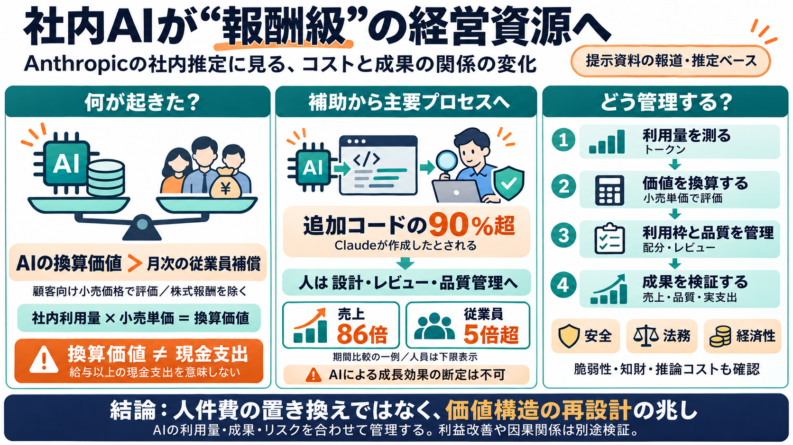

Blog | Anthropic IPO Explained: How to Read the S-1 Like a Strategic Finance Pro
On top of the models sit two products that drove most of the recent growth. Claude Code writes software, and Cowork hand…

社内で使うClaudeの価値を「顧客向け小売価格」で換算したら、従業員への月次補償を上回る水準になった—という報道が示す転換点を整理します。
AI利用は多くの場合トークン（文章の最小単位）で計測され、利用量に応じて費用が見えるため、AIが「人件費以外の主要コスト」として経営に登場します。
IPO書類で、社内利用のClaude価値（顧客単価で換算）が、従業員への月次補償コスト（株式報酬を除く）を上回ったとされています。
重要なのは、これは会社が実際に給与以上へ現金支出を増やした直接証拠ではないことです。
9月に追加されたコードの90%以上がClaudeによって書かれたとされ、人間の支援に留まらず実装プロセスへ入り込んでいる可能性が示されます。
一定期間で売上が大きく伸び、従業員増はそれより小さい（ただし従業員は下限表示）と整理されています。
従来は“優秀な人間が最重要資源”でしたが、AIの利用が業務の主要部分を担うと、価値の生み方（コストと成果の結びつき）が変わり得ます。
「AI利用量を報酬のように扱う」という見方は、開発者へ利用枠を割り当て、生産性に応じて最適化する運用を想像させます。
売上成長と人員増の差は示唆的ですが、価格改定、契約構造、需要、市場環境など複数要因で起き得ます。
AIが実装に関与するほど、開発の評価基盤・品質ゲート・知財/ログ/責任分界の整理が重要になります。
この話は「人件費を置き換えた」という断定ではなく、内部AI利用を換算し管理することで、組織の価値構造が再設計され始めた可能性を示します。
以下は本要約の根拠として参照されることが多い情報群です（社内AIの換算、S-1/IPO関連、売上と人員の比較、リスク言及）。
On top of the models sit two products that drove most of the recent growth. Claude Code writes software, and Cowork hand…
Anthropic, the AI company behind the Claude family of large language models, initially submitted a draft S-1 registratio…
Log In Log In Forgot Account? []( ## Anthropic Claude AI Jay Robinson · Admin · August 14 · Anthropic IPO p…
Three straight years of roughly ten-fold growth: 9.4x, then 11.9x, then 14.0x. Anthropic growth versus peers at IPO > …
Amazon and Google were among Anthropic's early strategic partners, investing billions of dollars in the startup while …